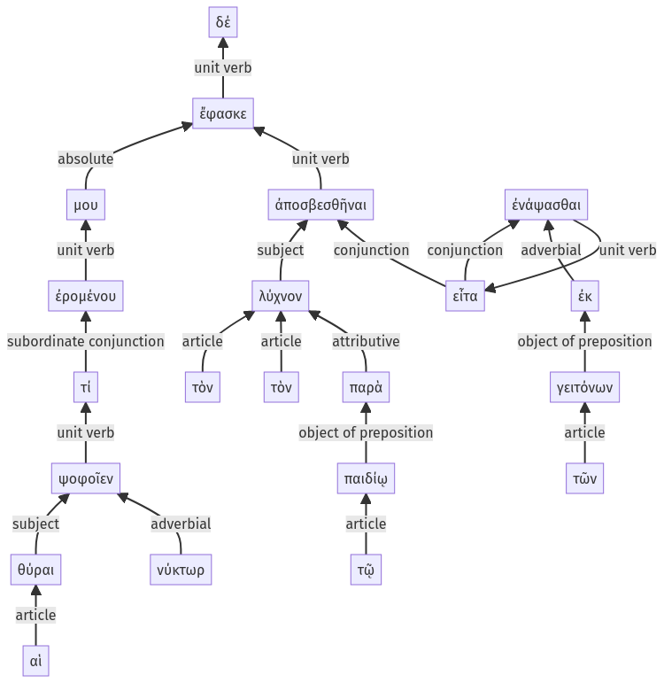

Lysias, Oration 1, 1.14.12-1.14.32a
1.14.1-1.14.11a | 1.14.33-1.14.39a
Sentence 32
1.14.12-1.14.32a
ἐρομένου δέ μου τί αἱ θύραι νύκτωρ ψοφοῖεν, ἔφασκε τὸν λύχνον ἀποσβεσθῆναι τὸν παρὰ τῷ παιδίῳ, εἶτα ἐκ τῶν γειτόνων ἐνάψασθαι.
2 ἐρομένου μου
3 τί αἱ θύραι νύκτωρ ψοφοῖεν
1 ἔφασκε
2 τὸν λύχνον ἀποσβεσθῆναι τὸν παρὰ τῷ παιδίῳ
2 εἶτα ἐκ τῶν γειτόνων ἐνάψασθαι
ἐρομένου δέ μου τί αἱ θύραι νύκτωρ ψοφοῖεν, ἔφασκε τὸν λύχνον ἀποσβεσθῆναι τὸν παρὰ τῷ παιδίῳ, εἶτα ἐκ τῶν γειτόνων ἐνάψασθαι.
Highlighting:
- connecting words
- unit verb
- subject
- object
Color code:
- Independent clause (level 1, transitive verb)
- circumstantial participle (level 2, transitive verb)
- indirect statement (level 3, intransitive verb)
- indirect statement with infinitive (level 2, intransitive verb)
- indirect statement with infinitive (level 2, intransitive verb)
